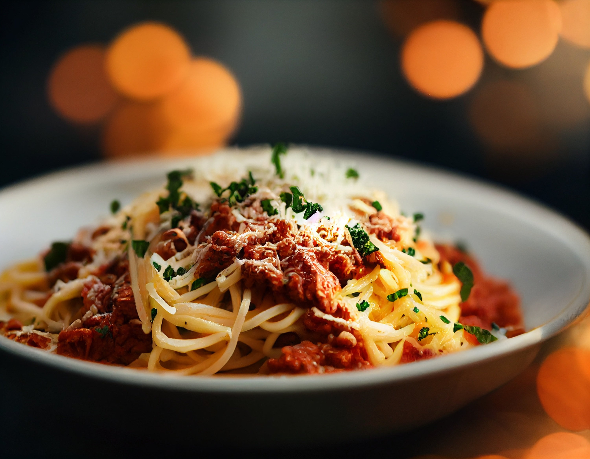

Spaghetti Bolognese

-
 30 Min.
30 Min.
-
 mittel
mittel
-
 17.03.2026
17.03.2026
- 400 g Spaghetti
- 400 g Hackfleisch
- 1 Zwiebel
- 2 Knoblauchzehen
- 400 g passierte Tomaten
- 2 EL Olivenöl
- Salz & Pfeffer
Zubereitung
-
ca. 30 Minuten
-
Gesamtzeit ca. 30 Minuten
Spaghetti in reichlich Salzwasser nach Packungsanweisung al dente kochen. Währenddessen Zwiebel und Knoblauch schälen und fein hacken. Olivenöl in einer Pfanne erhitzen und das Hackfleisch krümelig anbraten. Anschließend Zwiebel und Knoblauch hinzufügen und kurz mitdünsten. Die passierten Tomaten dazugeben und die Sauce bei mittlerer Hitze etwa 15 Minuten köcheln lassen. Mit Salz und Pfeffer abschmecken. Die fertigen Spaghetti abgießen und zusammen mit der Bolognese-Sauce servieren.